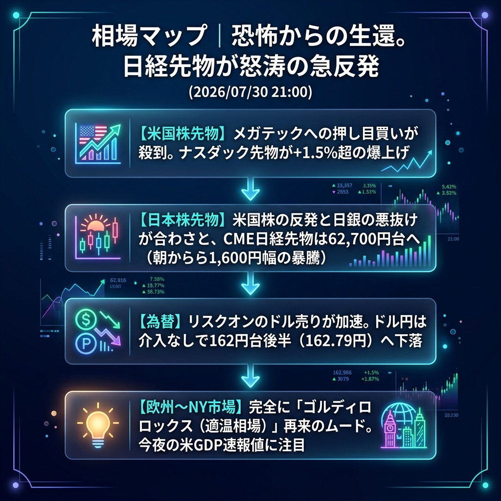

昨晩から今朝にかけての「株価暴落の恐怖」は完全に一掃されました。米国株（特にナスダック先物）が+1.5%超の猛烈な反発を見せたことで、日経平均先物は朝の安値（61,135円）から実に1,600円幅もの歴史的な大暴騰（62,725円）を演じています。
さらに、リスクオンのドル売りが加速し、ドル円は介入なしで162.70円台へ下落。市場は完全に「ゴルディロックス（適温相場）」再来のムードに沸いています。
「メガテックへの強烈な押し目買い」と「リスクオンのドル売り加速」。
東京市場の大引け（15:00）以降、欧州勢の本格参入に伴ってグローバルな「株買い・ドル売り」の流れが加速しました。昨日売られすぎた半導体・メガテック銘柄に猛烈な押し目買いが殺到しており、ナスダック先物は27,700ポイント台を回復。
この影響で、日米の株価が急反発する一方で、為替はドルが全面安となっており、ドル円は介入警戒水準であった164円から遠ざかり、162円台へと大きく沈んでいます。
| 指数・銘柄 | 現在値 | 前回比（前日比） | 騰落率 | 確認事項 |
|---|---|---|---|---|
| S&P 500 (ES=F) | 7,400.25 | +49.00 | +0.67% | 力強い反発 |
| Nasdaq (NQ=F) | 27,754.00 | +412.00 | +1.51% | 【爆上げ】メガテックに押し目買い殺到 |
| Dow (YM=F) | 51,998.0 | +233.0 | +0.45% | 最高値圏へ再接近 |
| 日経225現物 | 61,867.43 | 0.00 | 0.00% | 大引け値 |
| CME日経225先物 | 62,725.0 | +1405.0 | +2.29% | 【暴騰】朝から1600円幅の急反発 |
| USD/JPY | 162.793 | -0.587 | -0.36% | リスクオンのドル売りで162円台へ |
| EUR/USD | 1.1486 | +0.0021 | +0.18% | ユーロ買い・ドル売り進行 |
| 金 | 4,134.5 | +37.5 | +0.92% | ドル安を好感し一段高 |
| 原油 | 84.10 | -0.36 | -0.43% | 84ドル台で底堅い |
| BTCUSD | 64,806.35 | +903.45 | +1.41% | ナスダックに連動し急伸 |
今夜のハイライトは、21:30（あるいは22:30）に発表される「米GDP（国内総生産）速報値」などの重要経済指標です。
現在のアゲアゲなムード（ゴルディロックス）を正当化するためには、「経済は強すぎず弱すぎず（ソフトランディング）」という結果が求められます。もし指標が強すぎればインフレ再燃懸念で株価が急落し、逆に弱すぎればリセッション（景気後退）懸念で売られるため、絶妙なバランスが試されます。
今夜の米経済指標（GDP等）が「予想をはるかに上回る強い結果」となり、米10年債利回りが4.7%へ急騰した場合。インフレ再燃の恐怖からナスダックが暴落し、ドル円は急激なドル買いで再び164円（介入レッドゾーン）へ一瞬で吹き飛ぶシナリオとなります。